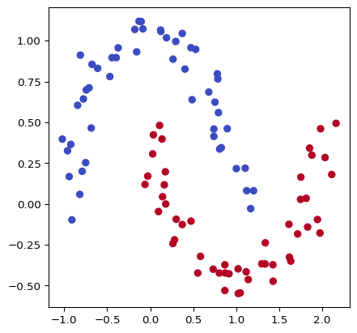
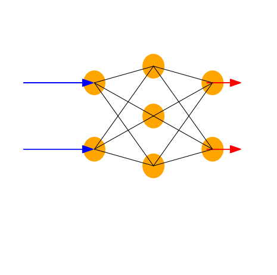
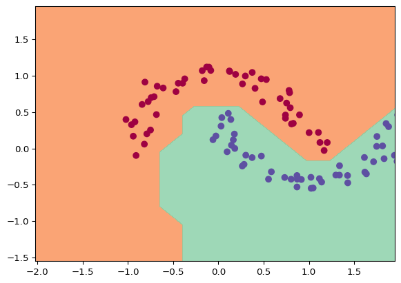

Code
import random
import numpy as np
import matplotlib.pyplot as plt
from micrograd.engine import Value
from micrograd.nn import Neuron, Layer, MLP
from sklearn.datasets import make_moons
np.random.seed(1337)
random.seed(1337)This note is nothing but some commentary added on Karpathy’s micrograd example.
It’s signal in, and signal out. The transformation function is the key - it can literally be anything. Intuitively, modeling based on our understanding of the neuron, a simpler function is a good choice. But we do not choose linear functions as they can not model complex relationships.
Stacking multiple of them leads to obviously interesting complex functions. But we do not know the parameters of this large function that the entire network represents. We need to learn them.
X, y = make_moons(n_samples=100, noise=0.1)
y = y*2 - 1
plt.figure(figsize=(5,5))
plt.scatter(X[:,0], X[:,1], c=y, cmap='coolwarm')
The dataset is a simple 2D dataset with two classes. We can see that the classes are not linearly separable.
What we want is a function that, given any of those points, can tell us which class it belongs to. The simplest way to do it is to define a dictionary that maps each point to a class. But that’s not what we want, because that’s not a realistic problem to solve.
The promise of the neural network is, like the brain, to generalize. That is, to be able to predict the class of a point that it has never seen before. This is the key to the success of neural networks.
So, we imagine that the solution is a function that can, given any point in this 2D space, choose a “side.” This side is the class that the point belongs to. So, a curve that can somehow separate the two classes is what we are looking for.
As we have stated before (without any formal proof), a network of stacked perceptrons can model any function. So, let’s model this conjectured function with a network of perceptrons.
Science and engineering make progress with any or all of abstractions, simplifications and generalizations. The perceptron is a simplification of the neuron. The multi-layer perceptron is a generalization of the perceptron, and a simplification of the brain.

Let’s attempt to solve this classification problem with a model that takes two inputs (the x and y coordinates of the point) and outputs a single value. This value will be the class of the point. We will use a multi-layer perceptron with 2 hidden layers, each with 16 neurons.
Number of parameters in the model is 337To train this network, we use our trusty friend - calculus, trying to minimize the error between the predicted class and the actual class. Because reducing the error means the network does what we want it to do, and calculus is great at helping us find minima or maxima by way of slopes.
Ah - the slope. The slope of the error function with respect to the parameters of the network. This is the key to training the network. We can use the slope to adjust the parameters in the right direction, so that the error decreases.
Which means we represent the network’s computation in terms of the delta between the wanted value and the actual value, and then use calculus to find the slope of the error function with respect to the parameters of the network. And adjust the parameters in such a way as to reduce the error.
def loss(batch_size=None):
if batch_size is None:
Xb, yb = X, y
else:
ri = np.random.permutation(X.shape[0])[:batch_size]
Xb, yb = X[ri], y[ri]
inputs = [list(map(Value, xrow)) for xrow in Xb]
scores = list(map(model, inputs))
losses = [(1 + -yi*scorei).relu() for yi, scorei in zip(yb, scores)]
data_loss = sum(losses) * (1.0 / len(losses))
alpha = 1e-4
reg_loss = alpha * sum((p*p for p in model.parameters()))
total_loss = data_loss + reg_loss
accuracy = [(yi > 0) == (scorei.data > 0) for yi, scorei in zip(yb, scores)]
return total_loss, sum(accuracy) / len(accuracy)
total_loss, acc = loss()
print(total_loss, acc)Value(data=0.8958441028683222, grad=0) 0.5Now, let’s let loose our optimization algorithm. Run the network through the input a 100 times, and adjust the parameters each time to reduce the error. And see where we land.
for k in range(100):
total_loss, acc = loss()
model.zero_grad()
total_loss.backward()
learning_rate = 1.0 - 0.9*k/100
for p in model.parameters():
p.data -= learning_rate * p.grad
if k % 1 == 0:
print(f"step {k} loss {total_loss.data}, accuracy {acc*100}%")step 0 loss 0.8958441028683222, accuracy 50.0%
step 1 loss 1.723590533697202, accuracy 81.0%
step 2 loss 0.7429006313851131, accuracy 77.0%
step 3 loss 0.7705641260584201, accuracy 82.0%
step 4 loss 0.3692793385976537, accuracy 84.0%
step 5 loss 0.31354548191852194, accuracy 86.0%
step 6 loss 0.2814234349772434, accuracy 89.0%
step 7 loss 0.2688873331398391, accuracy 91.0%
step 8 loss 0.2567147286057417, accuracy 91.0%
step 9 loss 0.27048625516379227, accuracy 91.0%
step 10 loss 0.2450702385365804, accuracy 91.0%
step 11 loss 0.25099055297915046, accuracy 92.0%
step 12 loss 0.21560951851922946, accuracy 91.0%
step 13 loss 0.2309037844640274, accuracy 93.0%
step 14 loss 0.20152151227899434, accuracy 92.0%
step 15 loss 0.2257450627928223, accuracy 93.0%
step 16 loss 0.19447987596204097, accuracy 92.0%
step 17 loss 0.21089496199246366, accuracy 93.0%
step 18 loss 0.159830773563036, accuracy 94.0%
step 19 loss 0.18453748746883922, accuracy 93.0%
step 20 loss 0.18977522856087634, accuracy 91.0%
step 21 loss 0.19072704042579647, accuracy 93.0%
step 22 loss 0.11733695088756484, accuracy 97.0%
step 23 loss 0.12173524408232456, accuracy 95.0%
step 24 loss 0.1261571261277045, accuracy 95.0%
step 25 loss 0.16049097780801674, accuracy 95.0%
step 26 loss 0.18747197705245813, accuracy 92.0%
step 27 loss 0.16741837891059408, accuracy 95.0%
step 28 loss 0.09586583491455397, accuracy 97.0%
step 29 loss 0.08778783707420913, accuracy 96.0%
step 30 loss 0.11731297569011852, accuracy 95.0%
step 31 loss 0.09340146460619837, accuracy 97.0%
step 32 loss 0.12454454903103453, accuracy 95.0%
step 33 loss 0.0798400265277727, accuracy 97.0%
step 34 loss 0.07727519232921674, accuracy 97.0%
step 35 loss 0.0766125014309447, accuracy 98.0%
step 36 loss 0.1061049237919837, accuracy 96.0%
step 37 loss 0.09062808429265971, accuracy 99.0%
step 38 loss 0.10671887043036932, accuracy 95.0%
step 39 loss 0.05225659921975848, accuracy 98.0%
step 40 loss 0.060160098952344594, accuracy 100.0%
step 41 loss 0.08596724533333948, accuracy 96.0%
step 42 loss 0.051121079431795995, accuracy 99.0%
step 43 loss 0.0524014240164283, accuracy 97.0%
step 44 loss 0.04530684179001565, accuracy 100.0%
step 45 loss 0.07211073370655101, accuracy 97.0%
step 46 loss 0.033342386513102326, accuracy 99.0%
step 47 loss 0.03143222795751124, accuracy 100.0%
step 48 loss 0.03658536747111511, accuracy 99.0%
step 49 loss 0.04829139382390296, accuracy 99.0%
step 50 loss 0.09875114765619633, accuracy 96.0%
step 51 loss 0.05449063965875454, accuracy 99.0%
step 52 loss 0.033926794357083, accuracy 100.0%
step 53 loss 0.05261517263568444, accuracy 97.0%
step 54 loss 0.03250295251424926, accuracy 99.0%
step 55 loss 0.02888327387207818, accuracy 100.0%
step 56 loss 0.04139151104027242, accuracy 98.0%
step 57 loss 0.018987407426128484, accuracy 100.0%
step 58 loss 0.025238335238837423, accuracy 100.0%
step 59 loss 0.02079656521341891, accuracy 100.0%
step 60 loss 0.032597111578102314, accuracy 99.0%
step 61 loss 0.017863351693480294, accuracy 100.0%
step 62 loss 0.02300871783221171, accuracy 100.0%
step 63 loss 0.02207932546358147, accuracy 100.0%
step 64 loss 0.029432917853529708, accuracy 99.0%
step 65 loss 0.016251514644091938, accuracy 100.0%
step 66 loss 0.028468534483264474, accuracy 99.0%
step 67 loss 0.013994365546208738, accuracy 100.0%
step 68 loss 0.015552344843651433, accuracy 100.0%
step 69 loss 0.03389119946160169, accuracy 99.0%
step 70 loss 0.014229870065926931, accuracy 100.0%
step 71 loss 0.013255281583285506, accuracy 100.0%
step 72 loss 0.012300277590022075, accuracy 100.0%
step 73 loss 0.012676052498355959, accuracy 100.0%
step 74 loss 0.02059381195595477, accuracy 100.0%
step 75 loss 0.011845398205364437, accuracy 100.0%
step 76 loss 0.01601269747288306, accuracy 100.0%
step 77 loss 0.02545836023922212, accuracy 100.0%
step 78 loss 0.014382930289661897, accuracy 100.0%
step 79 loss 0.011698962425817982, accuracy 100.0%
step 80 loss 0.012318500800515782, accuracy 100.0%
step 81 loss 0.014121117031464236, accuracy 100.0%
step 82 loss 0.011664591962446229, accuracy 100.0%
step 83 loss 0.011589314549188734, accuracy 100.0%
step 84 loss 0.010990299347735225, accuracy 100.0%
step 85 loss 0.01098922672069161, accuracy 100.0%
step 86 loss 0.010988193757655071, accuracy 100.0%
step 87 loss 0.010987200447388705, accuracy 100.0%
step 88 loss 0.010986246779084925, accuracy 100.0%
step 89 loss 0.010985332742365276, accuracy 100.0%
step 90 loss 0.010984458327280174, accuracy 100.0%
step 91 loss 0.010983623524308862, accuracy 100.0%
step 92 loss 0.010982828324359073, accuracy 100.0%
step 93 loss 0.010982072718767001, accuracy 100.0%
step 94 loss 0.010981356699297042, accuracy 100.0%
step 95 loss 0.010980680258141723, accuracy 100.0%
step 96 loss 0.010980043387921506, accuracy 100.0%
step 97 loss 0.010979446081684675, accuracy 100.0%
step 98 loss 0.010978888332907229, accuracy 100.0%
step 99 loss 0.010978370135492719, accuracy 100.0%Wow, looks like it wasn’t hard at all! The network learnt pretty quickly and the accuracy moved to 100% pretty early on.
Let’s visualize the decision boundary of the network.
h = 0.25
x_min, x_max = X[:, 0].min() - 1, X[:, 0].max() + 1
y_min, y_max = X[:, 1].min() - 1, X[:, 1].max() + 1
xx, yy = np.meshgrid(np.arange(x_min, x_max, h), np.arange(y_min, y_max, h))
Xmesh = np.c_[xx.ravel(), yy.ravel()]
inputs = [list(map(Value, xrow)) for xrow in Xmesh]
scores = list(map(model, inputs))
Z = np.array([s.data > 0 for s in scores])
Z = Z.reshape(xx.shape)
fig = plt.figure()
plt.contourf(xx, yy, Z, cmap=plt.cm.Spectral, alpha=0.8)
plt.scatter(X[:, 0], X[:, 1], c=y, s=40, cmap=plt.cm.Spectral)
plt.xlim(xx.min(), yy.max())
plt.ylim(yy.min(), yy.max())